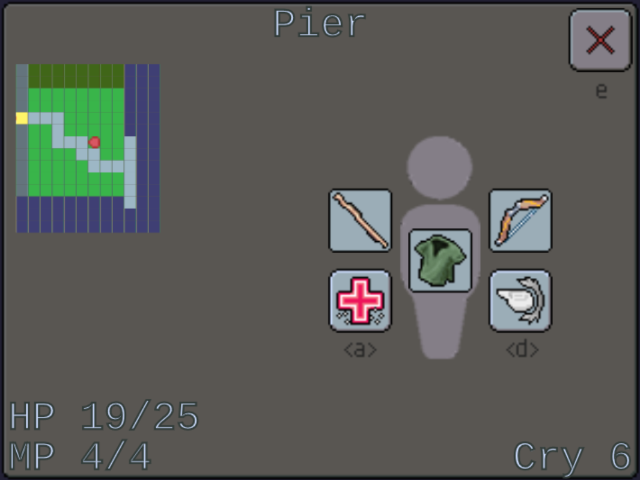
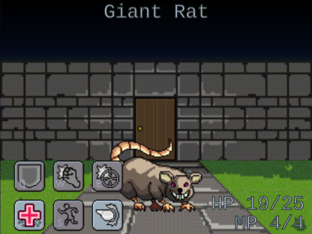

You were a great adventurer. You slayed horrifying monsters, unveiled strange catacombs, saved innocent villagers and destroyed many evils. Less than a year ago, you foiled the plans of a Hades-worshipping cult near the village of Idarous.
But the world has changed. Borders are drawn and redrawn. Kings and tyrants consolidate their power. Revolutions and rebellions flare across the land. Transportation and communication networks grow rapidly. Wilderness gives way to civilization, danger to stability. Rynn is in transition, and you find yourself left behind. Every day the world becomes less friendly to adventure.
On a mysterious island off the Phalaen coast lies the enigmatic Forge. The ancient structure promises riches and fortune to those strong and brave enough to endure its hazards. Many adventurers cannot resist the call. Few return, and none have made it all the way to its unknown depths.
You grab your trusty cloak and stick. One last adventure. One last score.
It's not over yet.
Most of the game involves exploring the world from a first-person view. Use the WASD keys or tap/click to move.
Your current orientation is displayed at the top of the screen. If enabled, the minimap will be displayed on the left side. You can tap or click the ? icon or press E to open an info screen with a map and other information.
While exploring, you may come across doors, chests, and other adventurers. Simply run into these to interact with them. Some doors lead to other levels or the Lift, while others lead to shops where you can rest or buy equipment.
The info screen displays a map the current location with your position and heading indicated by a red icon, as well as your current health and mana points. It also displays your current equipment and Crystal (currency).
You can select spells with the A and D keys or by tapping/clicking on the spell icons. You can learn as many spells as you want but can only have two ready for use in combat.
Press E or tap/click the exit button in the upper right to go back to exploring the world.
Sooner or later, you will end up in combat. Like the rest of the game, combat is controlled with the WASD+QE cluster or by tapping or clicking on icons on screen. Combat is turn-based; you select an action, the enemy responds, and the cycle repeats until one of you is dead.
Some enemies may be weak to melee attacks, weak to ranged attacks, or weak to certain powers. Some may be stronger against one or many of them. Experiment and find out!
Copyright (c) 2017 Chris Leclair. All rights reserved. See credits section and files for third-party licenses and other details.